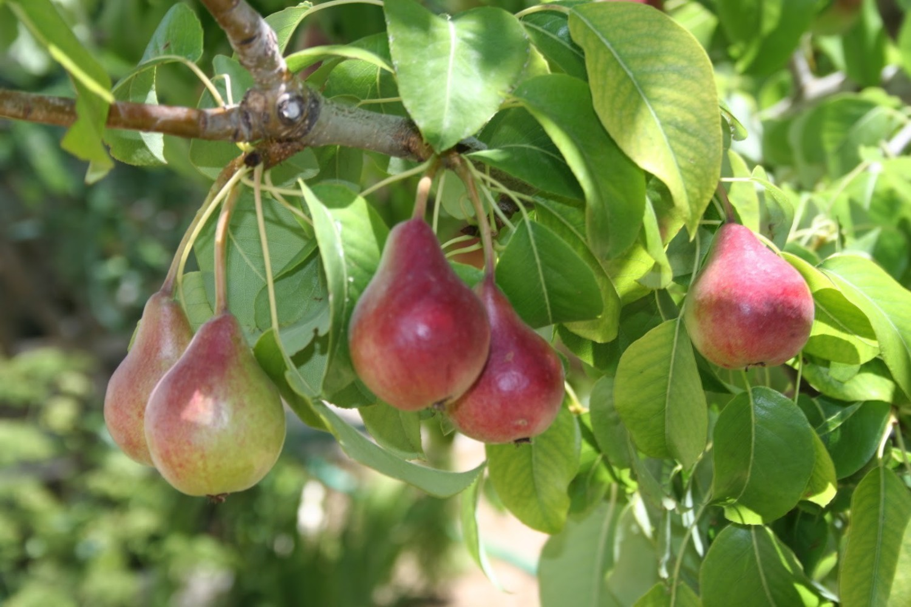

Ayuntamiento de Senés
JARDIN BOTANICO DE ESPECIES AUTOCTONAS DE SENES

Pyrus communis

El peral (Pyrus communis) es un árbol frutal caducifolio muy cultivado en regiones templadas y mediterráneas, apreciado por sus frutos dulces y jugosos.
Presenta un tronco recto y una copa redondeada o ligeramente piramidal. Sus hojas son ovaladas, de color verde brillante, y en primavera se cubre de abundantes flores blancas que posteriormente dan lugar a las peras.
El peral se cultiva ampliamente en regiones templadas de Europa y el Mediterráneo. Prefiere suelos profundos, fértiles y bien drenados.
En el entorno de Senés, es habitual en huertos y pequeñas explotaciones agrícolas.
La pera es un fruto rico en agua, fibra y vitaminas, con propiedades digestivas y refrescantes. Es muy valorada en la alimentación saludable.
Además, es de fácil digestión y adecuada para todas las edades.
El peral simboliza la dulzura y la generosidad, al ofrecer frutos abundantes.
También representa la fertilidad y la vida familiar.
En Senés, el peral ha sido cultivado en huertos para consumo familiar, tanto en fresco como en conservas.
Sus frutos han formado parte de la dieta tradicional.
El peral florece en primavera y sus frutos maduran en verano o principios de otoño.
Existen numerosas variedades de perales adaptadas a diferentes climas y usos.
La madera del peral también ha sido utilizada en trabajos artesanales.